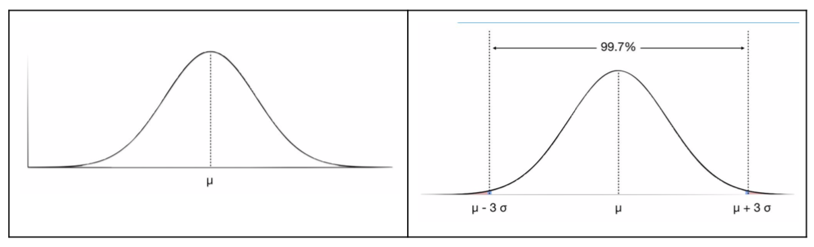
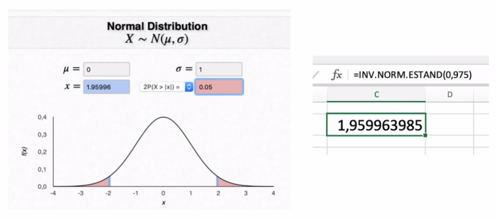
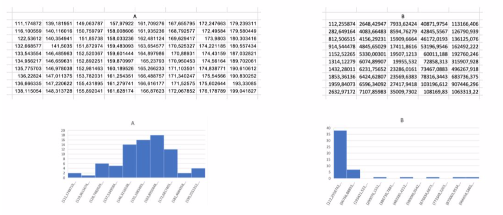
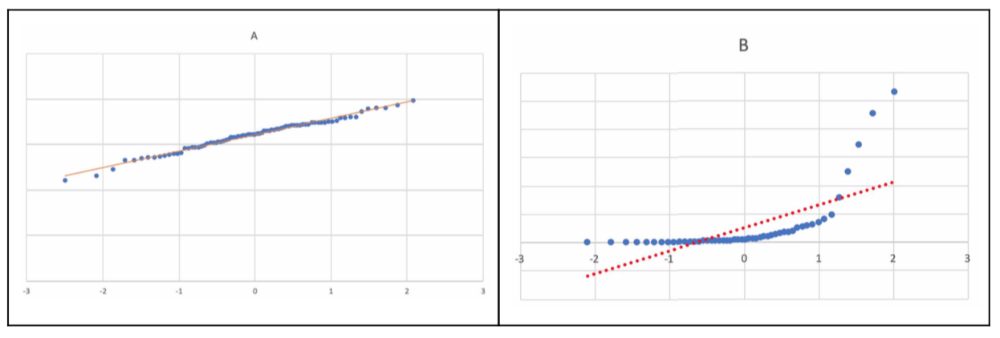
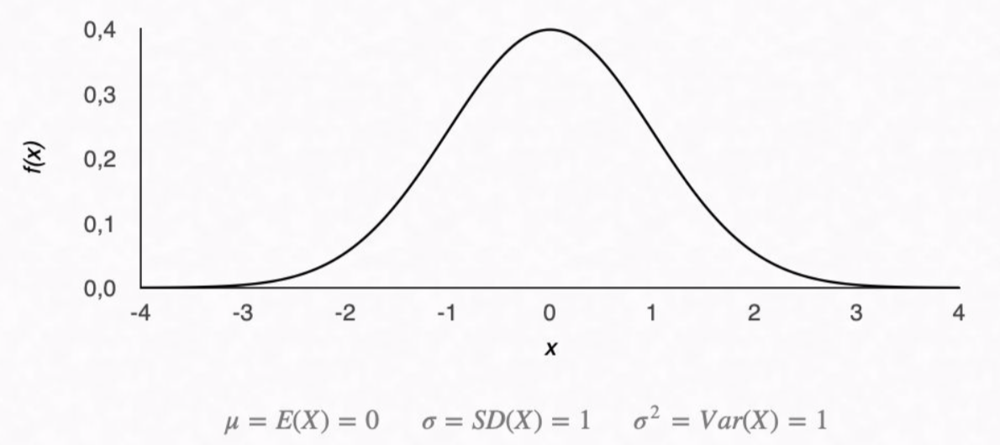
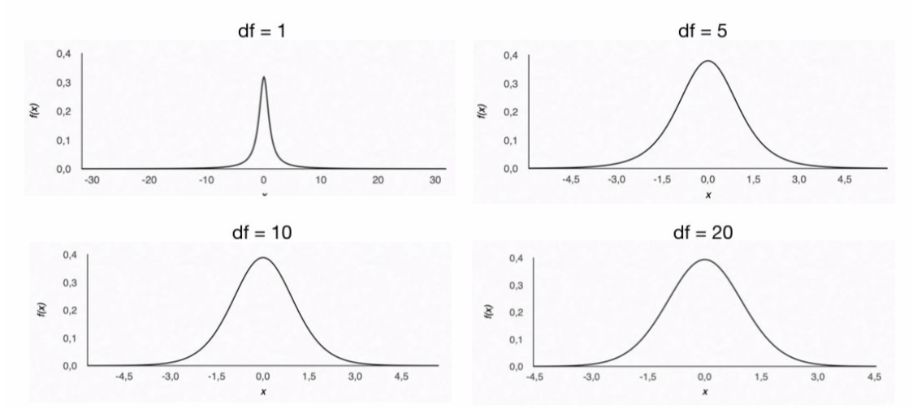
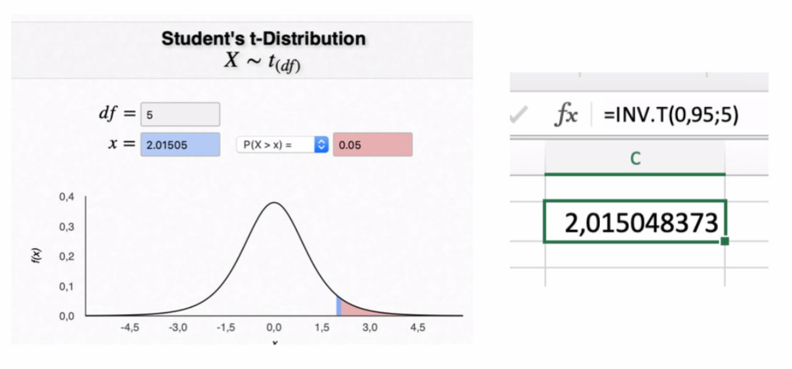
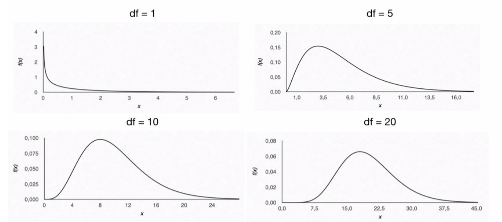
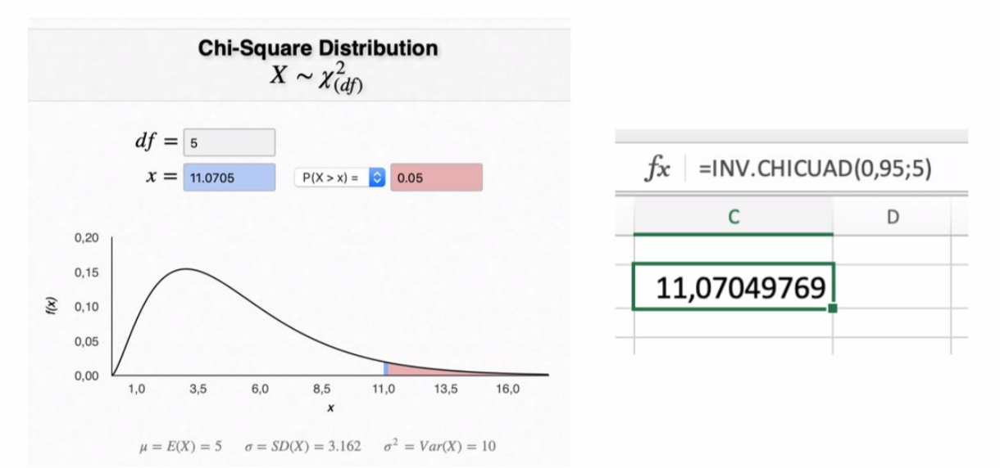

4.3 Distribuciones de probabilidad
Cuando obtenemos datos en un experimento, los resultados obtenidos constituyen uno de los muchísimos resultados posibles. Así, unos resultados ocurren con más frecuencia que otros.
Una variable aleatoria tiene en cuenta todos los posibles resultados que puedan darse en un fenómeno aleatorio, asignando un valor numérico a cada uno de ellos, de modo que podamos calcular su probabilidad.
Para el cálculo del valor p, utilizaremos distribuciones de probabilidad. Una distribución de probabilidad de una variable aleatoria es una función que asigna a cada suceso definido sobre la variable la probabilidad de que dicho suceso ocurra.
Resulta que hay muchas distribuciones de probabildad para variables aleatorias tanto discretas como continuas. Más aún, los promedios, las desviaciones estándar y otras estadísticas también tienen distribuciones.
Es importante comprender los diversos tipos de distribuciones porque influyen en la elección del análisis estadístico que se debe realizar en ellas. Por ejemplo, sería bastante incorrecto realizar la famosa prueba t en valores de datos para una muestra que no proviene de una variable con una distribución normal en la población de la que se tomó la muestra.
Vamos a explicar la más utilizadas para variables continuas.
4.3.1 Distribución normal
La distribución normal es quizás la distribución más importante. También conocida como distribución gaussiana o campana de Gauss, es la más conocidas entre los modelos continuos. Se utiliza para modelar prácticamente la totalidad de las medidas antropométricas (longitudes, pesos,…), los efectos de fármacos, los errores cometidos al medir ciertas magnitudes, etc.
Necesitamos saber que los valores del conjunto de datos para una muestra se toman de una población en la que esa variable se distribuye normalmente antes de decidir qué tipo de prueba estadística usar. Además, la distribución de todos los resultados posibles se distribuye normalmente.
La distribución normal tiene las siguientes propiedades:
- la mayoría de los valores se centran alrededor de la media
- a medida que se aleja de la media, hay menos datos
- es simétrica respecto de la media
- curva en forma de campana
- el área encerrada entre la curva y el eje OX es 1
- casi todos datos (99.7%) están a menos de 3 desviaciones estándar de la media

La probabilidad de que el valor de una variable normal esté entre dos valores corresponde con la diferencia de la función de distribución en dichos valores. Para este cálculo se han utilizado históricamente tablas. Hoy en día tanto las hojas de cálculo como programas específicos nos dan esos valores.

Generalmente, se utiliza el estadístico asociado a la distribución normal en contrastes de hipótesis que involucran a medias.
4.3.2 Normalidad de los datos
Asumir el supuesto de normalidad significa aceptar que la distribución de frecuencias relativas de los datos de la población se adaptan aproximadamente a una curva normal.
Una primera aproximación a la comprobación de la normalidad de datos puede ser mediante la representación gráfica del histograma comprobando si se ajusta a una curva normal. En el siguiente ejemplo:

vemos dos conjunto de datos A y B. Para A (a la izquierda de la imagen), el histograma parece que se ajusta a una curva normal con algunos outliers. En cambio, los datos B presentan una asimetría hacia la derecha bastante considerable.
Existen diversos métodos, (test de Shapiro-Wilk, test de Levenne, …) para contrastar si cierta variable sigue un modelo de distribución normal a partir de una muestra aleatoria de tamaño n. La mayoría de ellos están vinculados a aspectos gráficos . Veamos gráficamente cómo comprobar si nuestros datos provienen de una distribución normal usando los gráficos cuantil-cuantil (qq plot).
La construcción del gráfico de probabilidad normal se realiza a través de los cuantiles de la normal estándar, de forma que aceptaremos normalidad de los datos siempre que los puntos en el gráfico tengan un comportamiento “suficientemente rectilíıneo”.
En la siguiente imagen:

podemos ver el gráfico cuantil cuantil de dos conjuntos de datos A y B. Para el conjunto de datos A (a la izquierda) observamos una linealidad en el gráfico, esto es, se ajusta a una recta. En este caso, aceptaríamos la hipótesis de normalidad, es decir, que los datos provienen de una distribución normal. En el caso de los datos B (a la derecha) no se observa dicha linealidad por lo que la distribución de frecuencias relativas de los datos de la población no se adaptan a una curva normal.
4.3.3 Normalidad de los datos (Práctica)
Para realizar esta práctica, debe tener descargado en su ordenador el archivo 3.practicas.xlsx y abrir la hoja/pestaña correspondiente.
En el siguente vídeo se muestran los pasos para realizar la práctica.
4.3.4 Distribución Z
Si consideramos X una variable aleatoria normal de media \(\mu\) y desviación típica \(\sigma\), N(\(\mu\), \(\sigma\)), entonces, la variable
\(Z=\frac{X-\mu}{\sigma}\)
cumple que es una distribución normal de media 0 y desviación típica 1, es decir, Z ~ N(0,1).
En resumen, este cambio de variable transforma cualquier variable normal de cualquier media y desviación típica en una con media 0 y desviación típica 1. A esta variable se le llama distribución normal estándar o tipificada.

No se usa comúnmente en estadísticas médicas, ya que requiere el conocimiento de algunos parámetros de la población (media \(\mu\) y desviación típica \(\sigma\)) que, en la mayoría de los casos, se desconocen. Es mucho más común usar la distribución t, que sólo requiere el conocimiento que está disponible a partir de los datos de una muestra (media \(\overline{x}\) y desviación típica \(s\)).
4.3.5 Cálculo del valor p (Práctica)
En el siguente vídeo se muestran los pasos para realizar la práctica. El sitio web al que se hace referencia en el vídeo es https://homepage.divms.uiowa.edu/~mbognar/.
4.3.6 Distribución t de Student
Esta es la distribución muestral más utilizada. Sólo requiere cálculos que se pueden realizar a partir de un conjunto de datos para una variable que se conoce a partir de los datos del conjunto de muestras para un estudio. Se suele utilizar cuando se dispone de pocos datos (n < 30) o no se cumplen necesariamente las condiciones de normalidad de la variable de datos X.
Uno de los valores que hay que calcular al utilizar la distribución t es el de grados de libertad (df: degrees of freedom). Es un concepto bastante interesante con muchas interpretaciones y usos. En el contexto que lo estamos usando, depende del número de participantes en un estudio y se calcula fácilmente como la diferencia entre el número total de participantes y el número total de grupos.
Por ejemplo, si tenemos un total de 30 sujetos en un estudio y los tenemos divididos en dos grupos, tendremos un grado de libertad igual a 28 (28 = 30 - 2). Cuanto mayores son los grados de libertad, más se asemeja la forma de la distribución t de la distribución normal.

En la imagen podemos ver la gráfica de la distribución t de Student con 1, 5, 10 y 20 grados de libertad.
Al igual que con la distribución normal, la probabilidad de que el valor de una variable esté entre dos valores corresponde con la diferencia de la función de distribución en dichos valores. Para este cálculo se han utilizado históricamente tablas. Hoy en día tanto Excel© como programas específicos nos dan esos valores. En la imagen, podemos ver el valor de la distribución t para un valor p de 0,05 y 5 grados de libertad.

Se suele utilizar el estadístico asociado a la distribución t de Student en pruebas de hipótesis que involucran a porcentajes.
4.3.7 Distribución \(\chi^2\) (chi-cuadrado o ji.cuadrado)
Del mismo modo que los estadísticos “z”, con su distribución normal y “t”, con su distribución t de Student, nos van a servir para realizar contrastes de hipótesis que involucran a promedios y porcentajes, el estadístico chi-cuadrado, que tiene distribución de probabilidad del mismo nombre, nos servirá para someter a prueba hipótesis referidas a distribuciones de frecuencias.
La distribución chi-cuadrado puede definirse como la suma de los cuadrados de n variables aleatorias independientes que siguen una normal de media 0 y desviación típica 1.
Es decir, si \(X_1\), \(X_2\), … , \(X_n\) son variables aleatorias independientes e idénticamente distribuidas,\(X_i\) ∼ N (0,1), diremos que la variable aleatoria X sigue una distribución chi-cuadrado con n grados de libertad, y escribiremos X ∼ \(\chi^2_n\) si
\(X=\sum{X_i^2}\)
En la imagen podemos ver la gráfica de la distribución \(\chi^2\) con 1, 5, 10 y 20 grados de libertad.

Al ser una suma de cuadrados, la distribución chi-cuadrado sólo toma valores positivos. La probabilidad de que el valor de una variable esté entre dos valores corresponde con la diferencia de la función de distribución en dichos valores. Para este cálculo se han utilizado históricamente tablas. Hoy en día tanto Excel© como programas específicos nos dan esos valores.
